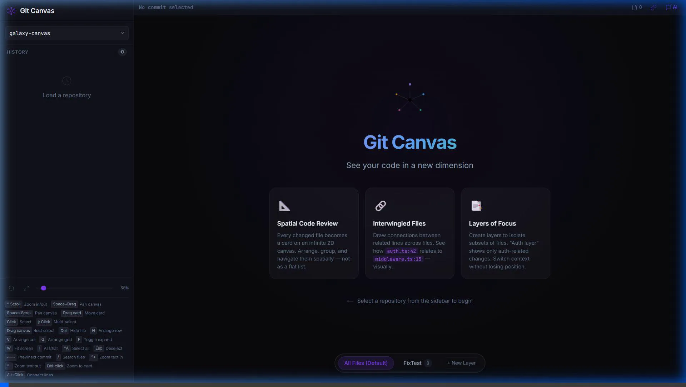
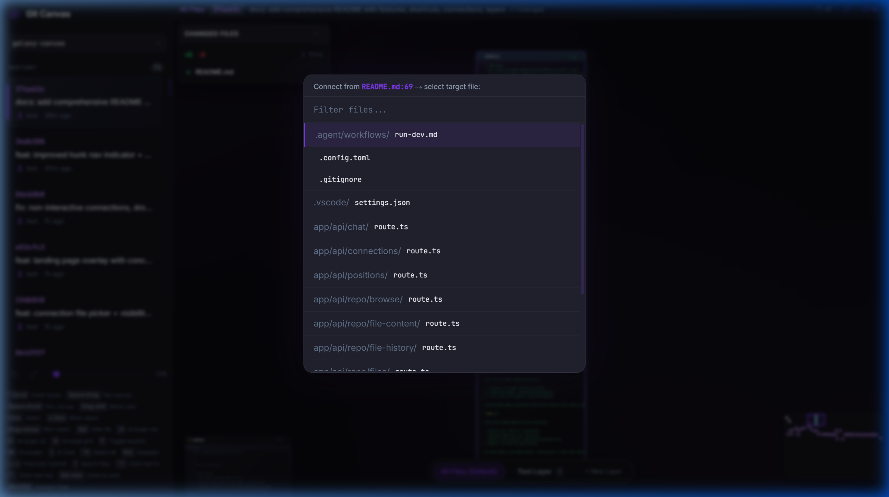
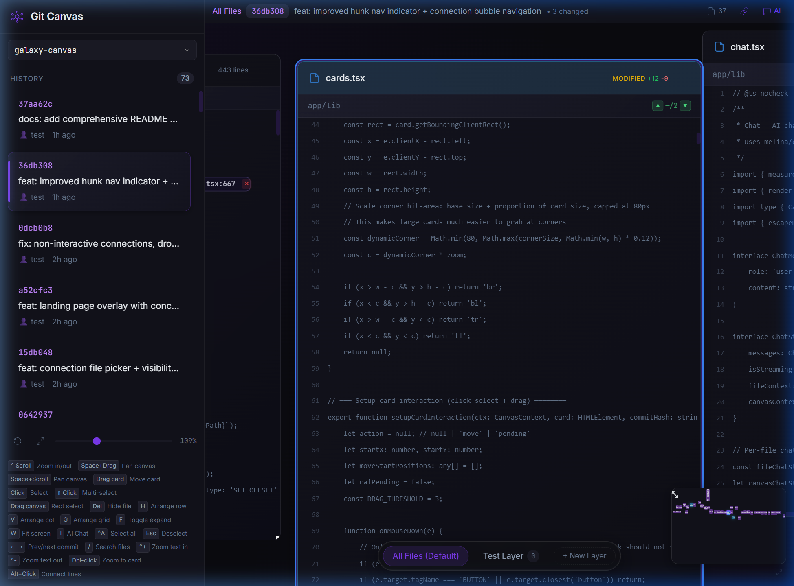
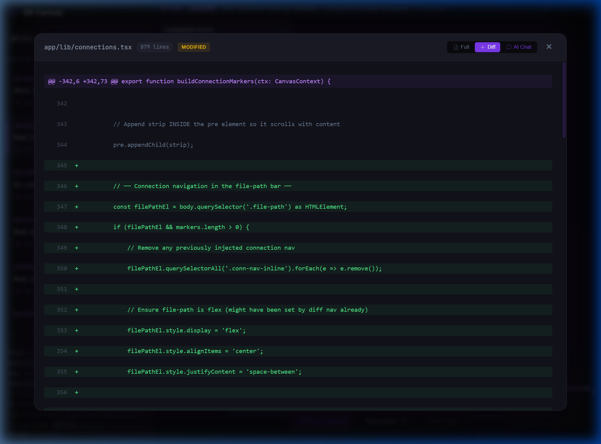

Multiple files on one canvas. Connections between lines.
Time as a dimension you navigate. Layers to filter the noise.

" Intertwingularity is not generally acknowledged — people keep pretending they can make things deeply hierarchical, categorizable and sequential when they can't. — Ted Nelson, Computer Lib/Dream Machines, 1974
" There are no 'subjects' at all; there is only all knowledge, since the cross-connections among the myriad topics of this world simply cannot be divided up neatly. — Ted Nelson
Your file system gives you one dimension — a tree. Here are four.
Every file is a card you can place anywhere on an infinite canvas. Multiple files visible at once — transclusion, not tabs. Arrange them the way you think, not the way the filesystem dictates.
Git commits are snapshots in time. Navigate them with arrow keys like frames in a film. See how code evolves, not just where it is now. Inline diffs show what changed — green additions, red deletions.
A commit touches 30 files but you're only reviewing the auth flow. Create a layer, add the 4 files that matter, switch to it. Each layer is a filtered view with its own viewport position.
Alt+click a line. Pick a target file. Click a target line. Now there's a permanent, visible link between those two points. This is intertwingularity — the cross-connections your file tree hides. Navigate between connected points with ◀ ▶ buttons in the file header.
A function calls another function in another file. That relationship is knowledge. Make it explicit.

Alt+click a line → pick a target file → click to connect
Alt+click a line in any file
Pick the target file from the search overlay
Click a line in the target — connection saved
Not one file at a time in tabs. All of them, spatially, with their relationships visible.

cards.tsx with hunk navigation — MODIFIED +12 -9 badge,
scrollbar diff markers, and full commit history sidebar
Green lines are additions. Red lines are deletions. Expand any card, scroll to the change, navigate between hunks.

connections.tsx expanded — 73 new lines adding connection navigation, every addition highlighted green
git clone https://github.com/7flash/git-on-canvas
cd git-on-canvas && bun install && bun run dev